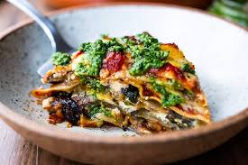

Aubergine lasagna
Aubergina lasagna

Description
This recipe creates a different but still warm and delicous version of the regular lasagna recipe. This has less ingredients but is still filling and healthy.
Ingredients
- Fresh Mozarella
- Cherry tomatoes
- Fresh basil
- Aubergine
- Red onion
- Garlic
- Canned tomatoes
- Spices
- Oil
Steps:
- Finely chop garlic and onion before adding them to a frying pan with oil on low heat
- Add canned tomatoes
- Add chopped cherry tomatoes once the canned have started to warm up.
- Once the cherry tomatoes have softened up and blends inn with the rest of the canned tomatoes, add Oregano and spices.
- While the tomato sauce is getting together, slice the aubergine in different pieces and fry it with oil. Take the friend Aubergine slices and put them on kitchen tissue to soak the moisture.
- Start assembling your Lasgna layers. Start with sauce, aubergine, mozzerella on top. Continue till you've used up all of your aubergine slices and tomato sauce. Add cheese at the end.